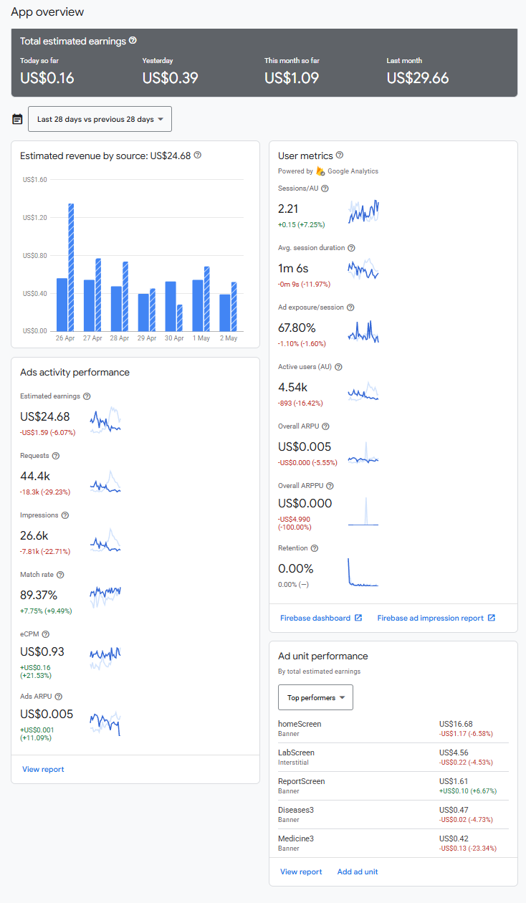

1. Poultry Landscape in Bangladesh
130,000+
Commercial Farms
1.81%
Contribution to GDP
25%
National Protein Intake
7,500
Registered Veterinarians
Empowering Farmers with Technology
Commercial Farms
Contribution to GDP
National Protein Intake
Registered Veterinarians
Top Markets: Bangladesh (88%), Saudi Arabia, USA, India, Malaysia.
9,650
↑ Consistent User Engagement88.1%
Local Market Share (BD)| Top Countries | Unique Users |
|---|---|
| Bangladesh | 8,500 |
| Saudi Arabia | 284 |
| United States | 236 |
| India | 114 |
| Malaysia | 82 |

"By the time help arrives, the flock often perishes."
Remote farms are hours away from diagnostic centers.
Viral diseases like AI or FMD spread faster than response times.
AI-driven analysis via image recognition of droppings.
Trained on thousands of cases for common poultry diseases.
Simple interface designed for farmers of all tech levels.
Featured on Channel 24
"মোবাইলেই মুরগির রোগ নির্ণয়!"Covered by Daily Newspapers as a leading Agro-Tech innovation.
Data-driven monetization and reach.
Real-time marketing and disease alerts.
Direct engagement with the farming community.
Smart prescriptions based on AI diagnosis results.
Top-tier pharmaceutical solutions available locally.
Cost-effective alternatives for every farmer.
Available On-Demand and localized.
Why Agro-Product companies choose PoultryPal:
PoultryPal - Bridging the Gap in Poultry Health
Contact us to learn more about our Agro-Tech ecosystem.